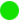

O que aprendi após um ano como desenvolvedora
Minha história como dev não é nada parecida com o típico "desmontava computadores quando criança" ou "aos 14 anos eu fiz meu primeiro website". Na verdade não me passava muito pela cabeça que eu poderia ser uma programadora, eu nem sabia direito o que isso significava. Mas conforme o terceiro ano do colegial acabava, eu precisava decidir qual seria minha futura profissão. Não consegui decidir a tempo então fui para o cursinho pré-vestibular.
Na época eu trabalhava como menor aprendiz na área de faturamento de uma multinacional. 90% do trabalho era operacional, envolvia planilhas do excel e alguns sistemas de gerenciamento próprio da empresa. Ali eu entendi que eu não gostava muito de trabalho manual e passava bastante tempo pensando: "se eu soubesse mexer com programação, automatizaria todo meu trabalho". Aos poucos, fui percebendo que a única coisa que me imaginaria fazendo no futuro era ajudando as pessoas com tecnologia.
Então entrei na faculdade e tomei uma "porrada" no meio do curso ao descobrir que não iria aprender a programar. Estava bem desmotivada, até que encontrei diversos eventos sobre programação no Meetup. Vi um chamado "Ruby para iniciantes" aqui em São Paulo e simplesmente fui.
Uma abordagem diferente
Lembro que fiquei bem animada, pois nunca tinha visto uma abordagem parecida na faculdade. Nesse dia descobri que as aulas eram feitas pelos professores de um bootcamp de programação chamado Le Wagon. O bootcamp dura um pouco mais de 2 meses (o dia inteiro) e te ensina sobre Ruby on Rails, arquitetura de software, banco de dados, etc. O valor do curso é parecido com o de uma pós graduação. Tive um tempinho para me planejar, pois faria o curso de manhã até a tarde, e após isso teria aula na faculdade até às 22h30.
Os meses que fiz o Le Wagon foram os melhores da minha vida. Aprendi na prática o que era codar e me apaixonei por Ruby e sua comunidade. Nas últimas semanas do curso nos separamos em equipes e criamos nossas startups. Criamos user stories, programamos, fizemos deploy e apresentamos o sistema funcionando ao vivo. Se quiser assistir a apresentação do projeto que criei em duas semanas com meu grupo, clique aqui (eu estou nitidamente nervosa no vídeo).
Terminei o bootcamp e me senti segura com o conhecimento que adquiri para procurar uma vaga como desenvolvedora júnior. Tive um "match" quando conheci a fintech Fast Notas, software de emissão automática de notas fiscais. Eu queria muito trabalhar com nota fiscal, e eles precisavam de um desenvolvedor júnior. Sou desenvolvedora do Fast Notas há um ano e dois meses.
Texto publicado originalmente no medium.
Clique aqui para ler.
Vote neste texto: 